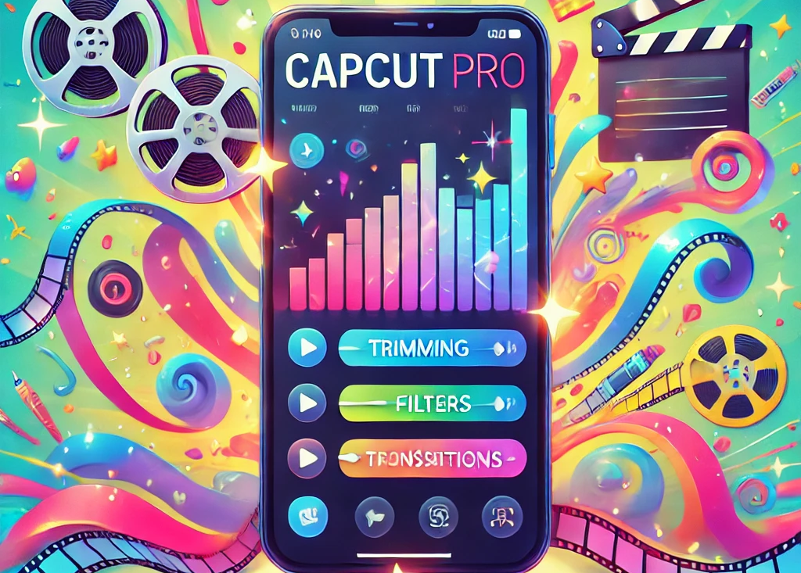

CapCut Pro APK Download: Unlock Your Creativity Like Never Before!
In the bustling digital age, video editing has become more of a necessity than a luxury. From Instagram reels to YouTube vlogs, everyone wants their content to stand out. If you’re someone who dreams of creating flawless videos without the hassle of complex software, let me introduce you to your new best friend: CapCut Pro APK. It’s a magic wand for video enthusiasts that lets you create stunning edits with just a few taps. Curious? Let’s dive into why this app deserves a spot on your device.
What is CapCut Pro APK?
For those who are new to the scene, CapCut Pro APK is an advanced version of the popular CapCut video editing app. It’s a feature-packed video editor that combines simplicity with professional-grade tools. Whether you're a social media influencer, content creator, or just someone who enjoys capturing moments, this app turns your raw footage into masterpieces.
The Pro version unlocks premium features like watermark-free exports, high-resolution video rendering, and a library of exclusive effects that will make your videos pop.
Why Choose CapCut Pro APK?
There are plenty of video editing apps out there, but CapCut Pro APK shines like a diamond in a sea of rocks. Here’s why:
- User-Friendly Interface: Its interface is intuitive, making it perfect for beginners and seasoned editors alike. No confusing menus or unnecessary buttons—just straightforward tools that help you get the job done.
- No Watermarks: The Pro version lets you export videos without any watermarks, giving your content a polished, professional look.
- Tons of Advanced Features: From multi-layer editing to keyframe animations, the possibilities are endless. Add cinematic effects, smooth transitions, or create a slow-motion masterpiece effortlessly.
- High-Quality Exports: Supports high-resolution exports, ensuring your videos look sharp and vibrant, even on big screens.
- Rich Library of Effects and Filters: Choose from a vast collection of effects, filters, and transitions to add a unique flair to your videos.
- Music and Sound Effects: Offers a wide range of background music and sound effects to complement your edits, or add your own music for a personal touch.
- Multi-Language Support: Supports multiple languages, making it accessible to users around the globe.
- Offline Mode: Works perfectly fine offline, so you can edit videos anywhere, anytime—no Wi-Fi needed.
How to Download CapCut Pro APK
Downloading and installing CapCut Pro APK is as easy as pie. Here’s a step-by-step guide to get you started:
- Find a Reliable Source: Search for CapCut Pro APK download on your browser and choose a trusted website.
- Download the APK File: Click the download button and let the file save to your device.
- Enable Unknown Sources: Go to your device’s settings and enable installations from unknown sources.
- Install the APK: Locate the downloaded file, tap on it, and hit "Install." Within seconds, the app will be ready to use.
- Launch and Edit: Open CapCut Pro APK, start exploring its features, and unleash your creativity.
Is CapCut Pro APK Safe?
You bet it is! CapCut Pro APK is developed by professionals who prioritize user safety. However, as with any third-party app, make sure you’re downloading it from a trusted source to avoid potential risks.
Who Should Use CapCut Pro APK?
The beauty of CapCut Pro APK lies in its versatility. Whether you’re:
- A social media star looking to create eye-catching reels,
- A vlogger aiming to produce high-quality content,
- A student working on a school project, or
- Just someone who enjoys making fun videos for friends and family,
CapCut Pro APK is your go-to app. It’s like having a personal editing studio in your pocket.
A Touch of Humor
Using CapCut Pro APK feels a bit like being a wizard in the world of video editing. Imagine Gandalf shouting, “You shall not pass!” as you cut out awkward scenes. Or think of yourself as the chef from Ratatouille, whipping up cinematic delights. Either way, editing has never been this fun and easy!
Final Thoughts
CapCut Pro APK is a game-changer for anyone who loves creating videos. It’s powerful, user-friendly, and packed with features that cater to all your editing needs. Whether you’re making a quick TikTok or a full-blown short film, this app has everything you need to make your vision a reality.
So, what are you waiting for? Download CapCut Pro APK today and let your creativity take flight. Trust me, your future self (and your followers) will thank you!